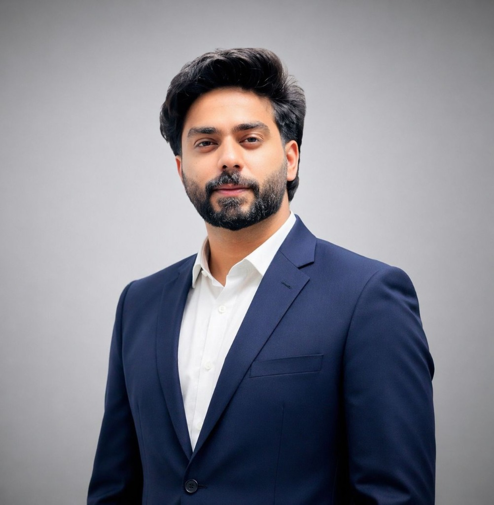

Arrowhead Digital Marketing
Web Development Lead & Project Manager
Website delivery, client communication, development coordination and digital infrastructure. Led the YalaRide portal project.

USMAN FAROOQI / LAHORE, PKINDEPENDENT THINKING. CONNECTED EXECUTION.
I'm Usman Farooqi.
Web development lead.
Ideas into digital experiences.
THE PERSON BEHIND THE WORK
I bring people, technology and the details together—from the first conversation to the final launch.
Meet Usman ↗From healthcare to the open road.
A selection of websites and platforms
I've helped bring to life.
WEB DEVELOPMENT LEAD & PROJECT MANAGER
Usman Farooqi
Lahore, Pakistan · Arrowhead DigiTech
Good digital work starts with understanding the business behind it.
I plan websites, coordinate development teams, and keep projects moving from requirements to deployment. My work spans healthcare, travel, car rental, recruitment and service businesses.
Alongside WordPress development and website operations, I use AI-assisted workflows to turn ideas into practical digital experiences.
Responsive business websites, WordPress, Elementor and WooCommerce. Clear journeys, thoughtful structure and strong foundations for growth.
Requirement gathering, client communication, team coordination, planning and delivery. Keeping the people and the priorities connected.
Domains, DNS, hosting, cPanel, business email, migrations and ongoing website maintenance.
Rapid prototyping and business website creation using Google AI Studio, Antigravity and Hostinger Horizons.
Web Development Lead & Project Manager
Website delivery, client communication, development coordination and digital infrastructure. Led the YalaRide portal project.
Sales Team Leader & Website Development
Website operations, remote sales team leadership and booking conversion improvements.
Virtual Marketing Assistant
Website management, competitive analysis and marketplace research.
WordPress Developer & Project Coordinator
Travel websites, mobile app coordination, hosting and deployment.
HAVE A PROJECT IN MIND?
Tell me what you're building.
Let's work out the next step.